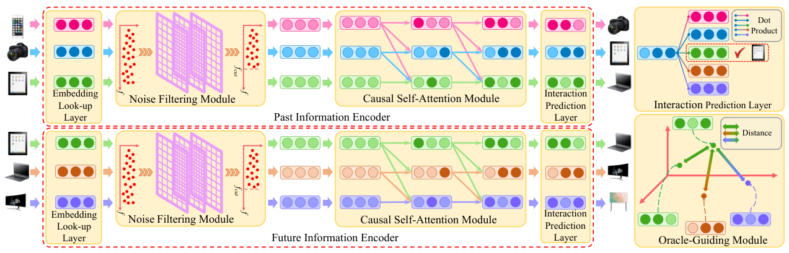

Oracle-guided Dynamic User Preference Modeling for Sequential Recommendation (Oracle 引导的序列推荐动态用户偏好建模)
- 会议/期刊: WSDM 2025
- 作者与机构: Jiafeng Xia, Tun Lu, Peng Zhang, Li Shang, Ning Gu (复旦大学) ; Dongsheng Li (微软亚洲研究院) ; Hansu Gu
- 推荐链路定位: 召回（序列 Next-Item 预测）
- 研究方向: 序列与会话推荐 / 自监督对比学习与交互去噪
- 论文原文: https://arxiv.org/abs/2412.00813v1
- 开源代码: https://github.com/Yaveng/Oracle4Rec
TL;DR (1分钟核心速览)
序列推荐只用“过去”训练，导致偏好建模系统性偏差；本文提出 Oracle4Rec，用训练期可得的“未来交互”作为后验 Oracle，通过双编码器 + 指数衰减的 KL 对齐损失把未来信息蒸馏进过去编码器，并配无参 FFT 低通滤波去噪与两阶段训练。在 6 个真实数据集、Leave-One-Out + 1:99 采样排序协议下，HR@1/NDCG@10 相对最强基线 DualRec 提升约 2%–8%（如 ML1M HR@1 0.3482→0.3709，Beauty NDCG@10 0.3490→0.3632）。
Background & Motivation (背景与核心矛盾)
- 主流范式: SASRec/BERT4Rec/FMLP-Rec 等以因果自注意力或全 MLP 编码历史序列，仅用 \(t\) 之前的交互训练 Next-Item 预测。
- 前人局限: ① 仅用过去信息无法刻画偏好演化方向，训练目标与“未来真实兴趣”之间存在系统性偏差；② 已有用未来信息的 BERT4Rec/GRec/DualRec 采用右到左逆序建模、且未来与过去同时联合训练，未来信息被“稀释”为普通监督信号，引导作用弱；且均未处理序列噪声。
- 核心洞察 (Key Insight): 未来交互是训练期天然可得的后验观测 (hindsight)，可充当正则项收缩表征空间；作者用 KL 散度度量“预测偏好分布 vs 真实偏好分布”，发现加未来编码器后 KL 从 0.0085 降至 0.0070（ML100K，+17.6%），且能缓解仅用过去信息导致的历史类别过拟合（图 2 中 user 260 的 category 2 概率被显著下调）。
- 本文切入点: 不做“掩码推断”，而做表征对齐——先独立学好未来编码器，再用它“教”过去编码器，得到 forward-looking 模型；推理时只用过去编码器，零额外开销。
Method (核心方法设计)
1. 整体框架 (Overall Architecture)
输入为用户历史序列 \(H_t^u\)（长度\(L\)）与全局序列\(G_t^u\)（额外含未来\(P\)个交互）。两路同构编码器（共享 item/position embedding 以稳定训练、减少参数）各自经过：Embedding Look-up → 无参频域低通去噪 → 因果自注意力 → 交互预测层，分别输出\(\mathbf{Q}\in\mathbb{R}^{L\times d}\)与\(\mathbf{R}\in\mathbb{R}^{L\times d}\)。Oracle 引导模块最小化\(\mathbf{Q}_L\)与未来编码器对应位置表征的加权 KL 距离；训练采用 2PTraining：先以\(\mathcal{L}_f\)训未来编码器，再以\(\mathcal{L}_p+\beta\mathcal{L}_g\)训过去编码器与引导模块。推理阶段丢弃未来编码器，仅用\(\mathbf{Q}_L^\top \mathbf{T}_v\) 全库打分。
flowchart TD
A["历史序列 H_t (过去)"] --> B["过去编码器: 低通去噪 + 因果自注意力"]
C["全局序列 G_t (含未来 P 步)"] --> D["未来编码器 (同构, 共享Embedding)"]
D -->|"阶段1: L_f 独立训练"| E["Oracle 引导模块 (加权KL对齐)"]
B -->|"阶段2: L_p + βL_g"| E
E --> F["推理: 仅过去编码器打分 Q_L^T T_v"]
2. 关键设计拆解 (Key Designs)
-
无参频域低通去噪 (Noise Filtering Module)：痛点在于首因/位置偏置噪声会污染注意力分布，而 FMLP-Rec 的可学习滤波器引入额外参数、训练更难。本文对第 \(g\)层表征做 FFT，按频率向量的\(q\)分位数取截止频率\(f_{cut}^g\)，用 0/1 指示矩阵保留低频分量后 IFFT，并加残差与 LayerNorm：\(\mathbf{F}_g=\mathrm{LN}(\mathrm{Dropout}(\mathrm{IFFT}(\mathbf{X}_g\odot\mathbf{M}_g))+\mathbf{F}_{g-1})\)。零参数即可滤除高频噪声，消融显示其贡献最大（Beauty HR@1 0.2199→0.2062 当移除）。
-
Oracle 引导的指数衰减对齐 (Oracle-Guiding Module)：痛点在于过去编码器只被“下一个物品”监督，学不到偏好演化方向。本文令过去预测表征 \(\mathbf{Q}_L\)对齐未来编码器在\(v_t\)及其后\(P+1\) 个位置上的表征，权重按时间距离指数衰减： $\(\mathcal{L}_g=\sum_{i=1}^{P+2}\alpha_i\cdot f(\mathbf{Q}_L,\mathbf{R}_{L-P-2+i}),\quad \alpha_i=e^{-\gamma(i-1)}\)$ 其中 \(f(\cdot)\) 实测 KL 散度最优（优于 JS/欧氏/余弦）。直觉：越近的未来越可信，衰减权重让模型学到“偏好漂移的方向”而非机械复制远期噪声。
-
训练目标、负采样与推理效率：过去损失 \(\mathcal{L}_p\)为 1 正 + 1 负的 BPR 式 sigmoid 交叉熵；未来损失\(\mathcal{L}_f\)对全局序列做逐位置（\(L\)个位置）的 next-item 监督，迫使未来编码器充分抽取后验信息；总目标\(\mathcal{L}=\mathcal{L}_p+\beta\mathcal{L}_g\)（阶段二）。负样本为均匀随机负采样（评测时 1:99）。推理仅保留单塔过去编码器，与 SASRec 同级开销，未来编码器只在训练期存在。
Experimental Setup & Evaluation Protocol (实验设置与评估协议)
- 数据集与预处理: 全部按 FMLP-Rec 惯例过滤交互数 < 5 的用户与物品（
5-core）：
| 数据集 | #Users | #Items | #Interactions | 密度 | 场景 |
|---|---|---|---|---|---|
| ML100K | 943 | 1,349 | 99,287 | 7.805% | 电影 |
| ML1M | 6,040 | 3,416 | 999,611 | 4.485% | 电影 |
| Beauty | 22,363 | 12,101 | 198,052 | 0.073% | 美妆电商 |
| Sports | 25,598 | 18,357 | 296,337 | 0.063% | 户外电商 |
| Toys | 19,412 | 11,924 | 167,597 | 0.072% | 玩具电商 |
| Yelp | 30,431 | 20,033 | 316,354 | 0.052% | 本地商业 |
- 数据划分与防穿越 (Splitting Strategy):
Leave-One-Out——每用户最后 1 个交互为测试、倒数第 2 个为验证、其余全部训练；序列按时间升序，超长截断取最近 \(L=50\)，不足左侧 padding。 - 排名评测协议 (Ranking Protocol): 主表为
Sampled Ranking，真值物品与 99 个用户未交互随机负样本共同排序（1:99）；附录另报Full-Ranking全库排序结果。指标 HR@{1,5,10}、NDCG@{5,10}、MRR。 - 对比基线与超参设置: 13 个基线，覆盖 PopRec、GRU4Rec、Caser、RepeatNet、HGN、CLEA、SASRec、BERT4Rec、GRec、SRGNN、GCSAN、FMLP-Rec、DualRec（后三者及 BERT4Rec/GRec 可用未来信息）。\(d\in\{32,64,128,256\}\)，\(L=50\)，\(P=10\)，\(\gamma\in[0.005,1.0]\)，\(q\in[0.3,1.0]\)，\(\beta\in\{0.005,0.01,0.05\}\)，dropout 0.5，Adam lr=0.001；显著性\(p<0.05\)（表中 ★）。
Key Experimental Results (实验关键数据)
1. 主实验对比 (Main Results)
选取 7 个代表性基线（含最强对手 DualRec），核心指标如下（★ 表示相对最强基线的统计显著）：
| 数据集 | 指标 | SASRec | BERT4Rec | SRGNN | GCSAN | FMLP-Rec | DualRec | Oracle4Rec | Improv.% |
|---|---|---|---|---|---|---|---|---|---|
| ML100K | HR@1 | 0.1926 | 0.1786 | 0.1834 | 0.2040 | 0.2085 | 0.2097 | 0.2257★ | +7.63% |
| ML100K | NDCG@10 | 0.4034 | 0.3846 | 0.3946 | 0.4121 | 0.4208 | 0.4108 | 0.4353★ | +3.45% |
| ML1M | HR@1 | 0.3478 | 0.3375 | 0.3404 | 0.3648 | 0.3541 | 0.3482 | 0.3709★ | +1.67% |
| ML1M | NDCG@10 | 0.5608 | 0.5467 | 0.5389 | 0.5623 | 0.5648 | 0.5496 | 0.5863★ | +3.81% |
| Beauty | HR@1 | 0.1794 | 0.1684 | 0.1777 | 0.1985 | 0.2038 | 0.2182 | 0.2199★ | +0.78% |
| Beauty | NDCG@10 | 0.3211 | 0.3000 | 0.3078 | 0.3227 | 0.3436 | 0.3490 | 0.3632★ | +4.07% |
| Sports | HR@1 | 0.1503 | 0.1405 | 0.1473 | 0.1674 | 0.1699 | 0.1831 | 0.1861★ | +1.64% |
| Sports | NDCG@10 | 0.3037 | 0.2870 | 0.2916 | 0.3111 | 0.3240 | 0.3380 | 0.3471★ | +2.69% |
| Toys | HR@1 | 0.1799 | 0.1504 | 0.1682 | 0.1995 | 0.1926 | 0.2170 | 0.2152 | -0.83% |
| Toys | NDCG@10 | 0.3075 | 0.2866 | 0.2995 | 0.3234 | 0.3346 | 0.3458 | 0.3565★ | +3.09% |
| Yelp | HR@1 | 0.2276 | 0.2446 | 0.2400 | 0.2561 | 0.2704 | 0.2817 | 0.2970★ | +5.43% |
| Yelp | NDCG@10 | 0.4699 | 0.4744 | 0.4675 | 0.4829 | 0.5040 | 0.5119 | 0.5300★ | +3.54% |
2. 消融实验 (Ablation Study)
| 设置 | ML100K HR@1 | ML100K NDCG@5 | ML1M HR@1 | Beauty HR@1 | Beauty NDCG@5 |
|---|---|---|---|---|---|
| (11) Oracle4Rec 完整版 | 0.2257 | 0.3843 | 0.3709 | 0.2199 | 0.3316 |
| (1) w/o 噪声滤波模块 | 0.1909 | 0.3554 | 0.3658 | 0.2062 | 0.3104 |
| (2) 可学习滤波器替代 | 0.2042 | 0.3637 | 0.3523 | 0.2087 | 0.3121 |
| (3) w/o 未来编码器 | 0.1782 | 0.3391 | 0.3477 | 0.1878 | 0.3010 |
| (4) w/o 指数衰减权重 | 0.1983 | 0.3604 | 0.3347 | 0.2123 | 0.3255 |
| (5) 传统联合训练 | 0.2087 | 0.3670 | 0.3497 | 0.2041 | 0.3164 |
| (6) JS 散度替代 KL | 0.1968 | 0.3583 | 0.3555 | 0.2160 | 0.3257 |
| (7) 欧氏距离替代 KL | 0.1987 | 0.3622 | 0.3630 | 0.2071 | 0.3194 |
| (8) 余弦距离替代 KL | 0.2070 | 0.3712 | 0.3608 | 0.2078 | 0.3211 |
| (9) 仅用未来编码器 | 0.1911 | 0.3407 | 0.3283 | 0.1986 | 0.3017 |
| (10) R2L 逆序抽取未来 | 0.2078 | 0.3659 | 0.3389 | 0.2071 | 0.3174 |
3. 关键实验发现 (Key Findings)
- 未来信息“引导”远胜“联合训练”：去掉未来编码器（设置 3）ML100K HR@1 从 0.2257 跌至 0.1782（-21%），而传统联合训练（设置 5）仅 0.2087，说明 2PTraining 的“先学后教”是收益主因，而非未来信息本身；仅用未来编码器（设置 9）同样次优，证明对齐方向不可逆。
- 无参低通滤波是第二大功臣且优于可学习滤波：移除后 ML100K HR@1 降 15.4%，换成可学习滤波器（设置 2）仍低 9.5%，验证“零参数去噪”在稀疏电商数据上更易训练、泛化更好。
- 通用性可迁移：将引导模块 + 2PTraining 插入 GRU4Rec/SRGNN/GCSAN/FMLP-Rec，ML1M HR@1 分别提升 10.0%/5.1%/5.4%/3.3%（均 \(p<0.05\)），说明该范式与主干架构正交，可作为即插即用训练插件。
Highlights & Limitations (亮点、对比与审稿批判)
- 与代表作对比 (vs. Prior Work): 与 BERT4Rec 的 Mask & Prediction 不同，本文不做“由上下文推断被掩码项”，而做双塔表征对齐，避免在噪声序列上强行推断导致的伪相关；与 DualRec/GRec 相比，本文未来信息为左到右自然顺序、先独立训练再引导、且对跨期未来按指数衰减区别对待，并额外处理噪声。
- 可迁移亮点: ① “后验 Oracle 蒸馏”思路可直接移植到 CTR 序列建模、会话推荐等任何训练期可见未来标签的任务；② 无参 FFT 低通滤波可作为通用去噪前置层，零参数、易部署。
- 审稿级局限批判: ① 主表为 1:99 采样排序，采样负样本会放大绝对指标，虽附录有 Full-Ranking 但正文未充分讨论；② 未来编码器使训练开销约翻倍（两阶段 + 逐位置未来监督），且 \(P\)、\(\gamma\)、\(q\) 三个超参需逐数据集调优，工业大规模场景下的训练成本与调参负担未量化；③ Toys 上 HR@1 略低于 DualRec，说明收益在极稀疏数据上并非无条件成立。
Rating (四维评分)
- 方法创新性 (Novelty): ⭐⭐⭐⭐ （“未来作 Oracle 引导过去”的视角清晰，配指数衰减对齐与两阶段训练，但本质是后验蒸馏/正则，理论新意中等）
- 评估协议与实验扎实度 (Protocol & Experiments): ⭐⭐⭐⭐ （6 数据集 + 13 基线 + 完整消融 + 通用性 + 显著性检验，唯主表采样排序略保守）
- 写作与数学规范度 (Clarity & Rigor): ⭐⭐⭐⭐ （模块公式与损失定义完整、与 DualRec 的五点差异对比清晰，部分推导置于附录）
- 工业落地与复现价值 (Industrial & Practical Value): ⭐⭐⭐⭐ （代码开源、推理零额外开销、可作插件插入现有序列模型，训练期成本翻倍是主要代价）